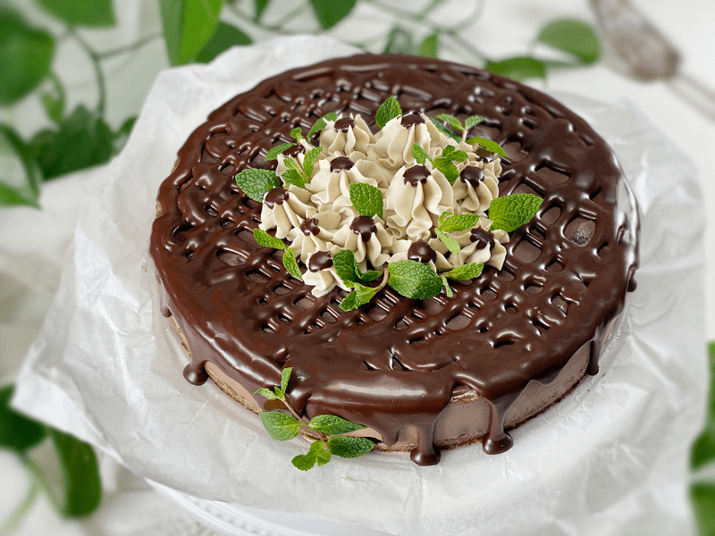
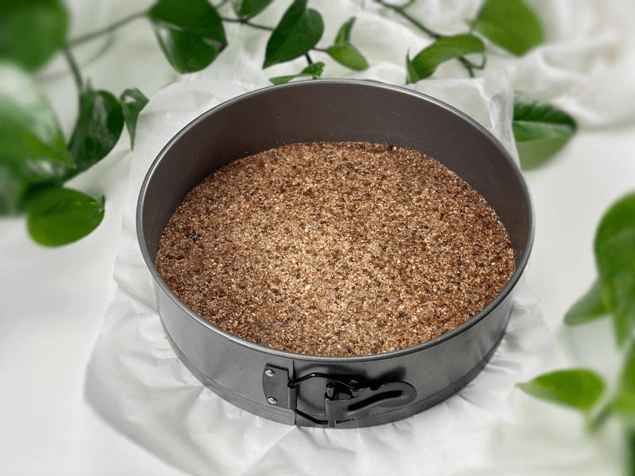
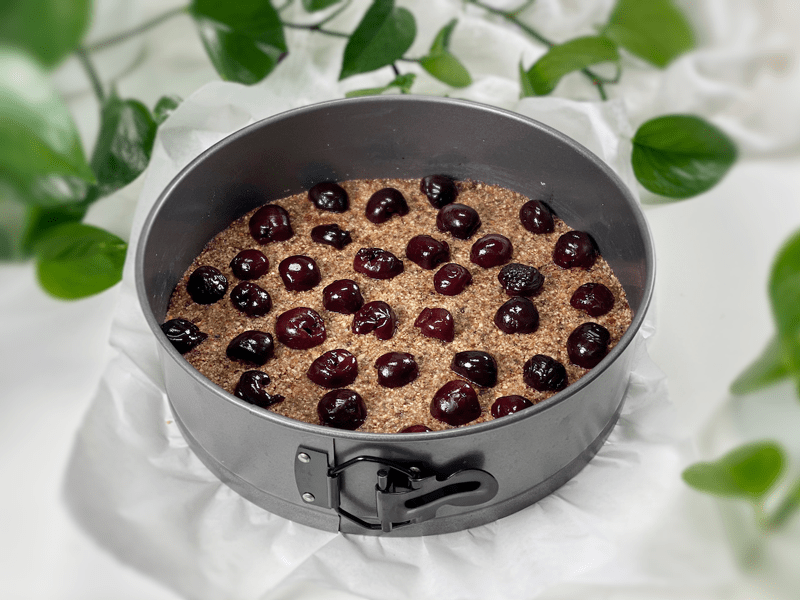
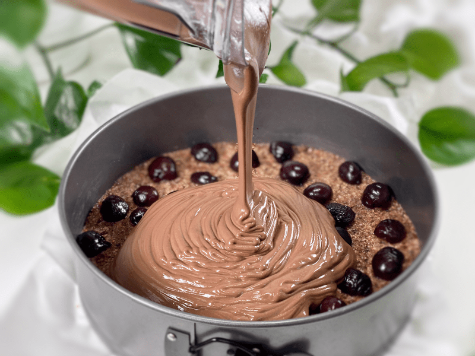
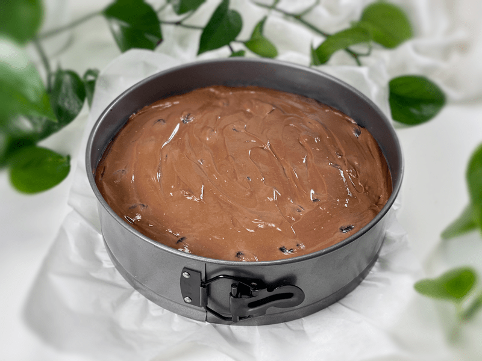
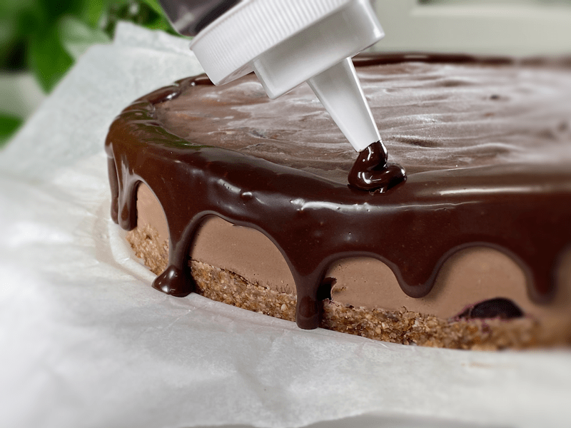
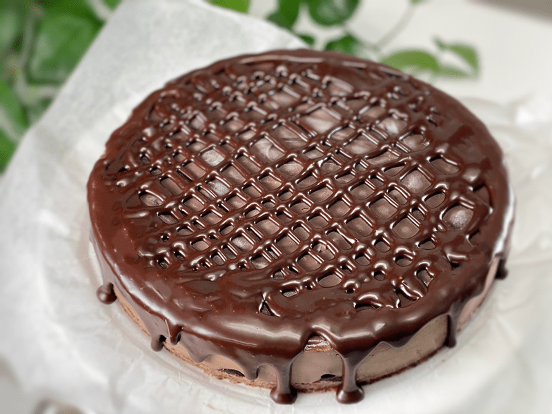
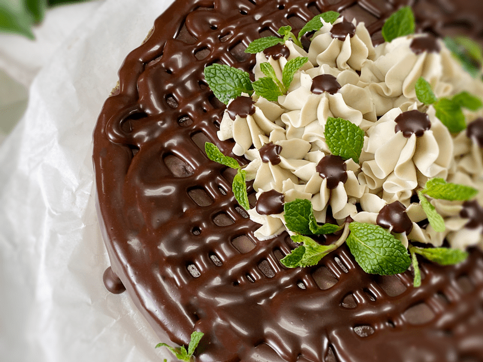
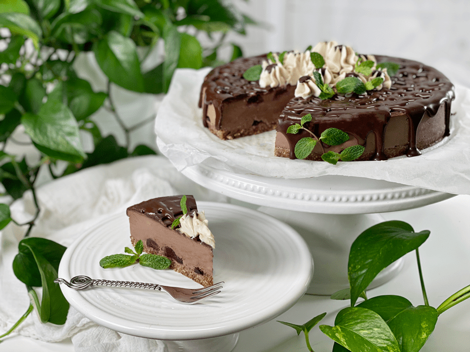
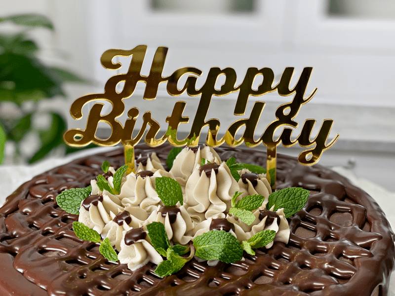

Black Forest Cheesecake
Be still my cherry-chocolate-loving heart! This raw, vegan, gluten-free Black Forest Cheesecake is so decadent and has the most incredible velvety mouth-feel with each bite. It’s a well-known fact that chocolate and cherries are a great combo, and this dessert is a great vehicle for showcasing this delightful pairing.
I designed this recipe in 2015, and every time I make it, I am always pleasantly reminded as to why we love raw vegan cheesecakes. It was Bob’s birthday on February 5th and I secretly made this cheesecake for our celebration. If COVID had a face, I would smack a little sunshine into it (I need to work on my anger issues). No party, no gathering. But I did spend the day pampering him with homemade foods!
Once he had his first piece of cheesecake, I cut the remaining cheesecake into equal-sized slices. From there, I placed two slices of cheesecake in decorative containers, and then we motored on down the road to deliver them to our friends. If the party can’t come to us, we will take it to them! That might have been the most socially distanced party yet.
Cheesecake Pans | Size Matters
A cheesecake pan is a two-piece, removable-bottom pan such as this (one) but most people are familiar with using a Springform pan that actually releases the cheesecake from the sides as well as the bottom. This helps keep delicate crusts and cakes intact while removing them from the pan.
- The SIZE of the pan affects the presentation and the slice count. The larger the pan, the thinner the cheesecake will be and the more slices you can serve from it. The smaller the pan, the taller the cheesecake will be, thus reducing the number of slices you can get from it. Most of my cheesecake batters will easily fit in a 9″ Springform pan. If you go too small, you will have leftover batter which isn’t necessarily a bad thing. You might be able to make two 4″ cheesecakes instead. You can really let creativity and circumstances drive this.
- I have a detailed post on how to set up your pans and how to create different styled crusts. Click (here) to learn more.
Blending | The Key to Achieve a Velvety Texture
One of the keys to creating delicious recipes in the kitchen is to have the right tools. Ask any mechanic, woodworker, seamstress, or painter. The quality of their work lies in their skills but also in their tools. The right tool will make a job easier and more enjoyable. Raw vegan recipes require certain tools because we aren’t using conventional ingredients nor are we cooking them to achieve certain textures. So we must be creative.
Why Do I Need a High Powdered Blender?
- Texture — Texture, or mouthfeel, is how food feels in our mouth as we eat it. As much as people obsess over the flavor or food, they obsess over the texture. When we bite into food, we have a preconceived idea as to what the texture will be, and when it doesn’t match up, it can off-putting. Soggy cracker, rock hard bread, gritty ice cream… you get the idea. A high powered blender will help us achieve that velvety texture that we expect from a cheesecake.
- Aesthetics – You know that saying, “We eat with our eyes”? Visually looking at food triggers our taste buds. We don’t need it in front of us, we don’t need to smell, heck, we don’t even have to know what it is because it starts to woo the senses. That’s why I add photos to recipes. I want to entice you, make your mouth to water, and draw you in so you make the recipe yourself.
Decorating the Cheesecake
No matter how you decide to decorate your cheesecake, be assured that you can’t go wrong, even if you leave it plain. Every time I make it, I end up giving the cheesecake a new look, since I try to use whatever I have on hand. This time around, I found a small zip-lock bag of frozen raw white frosting in the freezer and fresh mint in the fridge. I winged on the fly, since I was working around Bob floating in and out of my studio and I didn’t want him to see it. I normally love adding fresh cherries on top to give a hint of what is waiting inside, but cherries are not in season in February. Regardless, it turned out well and tasted amazing! What more can we really ask for?

Basic Cheesecake Ingredients & Possible Substitutions
Cashews | Soaked
- Cashews are the perfect “nut” for raw cheesecake bases. They are neutral in flavor, slightly sweet, and blend into a creamy texture that is to die for. The key is to soak them. This step softens them for blending purposes and causes them to swell in size, thus adding more volume to the batter.
Substitutions
- Pili nuts can be a substitution but they are hard to find, expensive (!), and super high in fat… more so than cashews! but if you have them, you can use them. Use the same measurement.
- Young Thai coconut meat. Use the same measurement, but PACK the measuring cup when doing so. The structure of the cheesecake will differ and will require keeping it in the fridge up until serving.
Maple Syrup | Sweetener Options
- When it comes to sweeteners, the best choice boils down to personal preference, color (if applicable), and viscosity. Maple syrup is not a raw product, but it’s one that Bob and I are comfortable with, so it has become my go-to. In the past, I used agave, but as the years have passed and deeper research has come to the surface, I no longer use it.
Substitutions
- For this recipe, you can use coconut nectar, which is lower on the glycemic index. This sweetener doesn’t work well if you are using it in a light-colored cheesecake (just for future reference).
- If you are trying to reduce your sugar intake, you can remove roughly a quarter of the sweetener and add in some liquid NuNaturals stevia. This will help to decrease the sugar and brighten the sweet flavor without affecting the taste. Start with 1/4 teaspoon and add more if needed.
- To make a more sugar-free, I have tested using 1/4 cup (48 g) Markus Sweet or Xylitol (powdered) and it came out really well.
Sunflower Lecithin Powder
- Lecithin is a powerful ingredient that can serve as an emulsifier (something that helps combine two liquids that repel, such as oil and water), thickener, and stabilizer all at once.
- Sunflower lecithin comes in two forms, powder and liquid. I prefer powdered, raw sunflower lecithin for several reasons.
- The powdered version is not as strong tasting as the liquid version. If the brand you are using is in a granulated form, grind it down to a fine powder before adding it to the remaining ingredients. This will ensure that it dissolves.
- The powder is also light in color, which won’t affect the color of your recipe. The liquid version is a dark amber color.
Substitution
- As long as the flavor pairs well, you can use raw cacao butter instead. Use the same measurement. Also, note that it contains more fat than lecithin and is more expensive.
Star Ingredient – Organic Cherries
Depending on when you come across this recipe, cherries may or may not be in season. If they are, by golly, take advantage of them! If they’re not, it is okay to use organic frozen cherries. I would even go as far as to say that I would prefer you to use frozen organic cherries over conventional fresh cherries. I have made this cheesecake with fresh and frozen cherries, and both versions came out perfect.
I hope you have a blessed and happy day. Please leave a comment below… I love hearing from you. blessings, amie sue

Ingredients:
Yields 9” Springform pan
Crust:
Chocolate filling:
- 3/4 cup water
- 3/4 cup maple syrup
- 1 Tbsp vanilla
- 1/2 tsp almond extract
- 3 cups cashews, soaked 2+ hours
- 3/4 cup raw cacao powder
- 1/4 tsp Himalayan pink salt
- 1 cup coconut oil, melted
- 3 Tbsp sunflower lecithin powder
- 1 1/2 cups sliced organic cherries
Topping (optional)
Preparation:
Crust:
- No one thinks about the aesthetics of the crust but visually it can change the appearance/feel of the cheesecake presentation. There are 3 main crust styles but learn more details about them (here).
- Prepare the Springform pan by wrapping the base with plastic wrap. Snap the ring on and set it aside.
- Place the raisins in a bowl and add enough warm water to cover. This will plump them up and help them bind the crust together. Set aside.
- In the food processor, fitted with the “S” blade, process the almonds into a coarse meal texture.
- Add coconut, cinnamon, and salt and process until everything is uniform in size.
- Drain and discard the soak water from the raisins, and hand-squeeze the excess water from them.
- Add the raisins, water, and vanilla to the food processor and process for 30-60 seconds or until the mixture sticks together when pinched.
- Press crust into a pie pan or Springform pan.
- Cut the cherries in half and place them on the bottom of the crust. Keep some aside to press into the cheesecake filling once you pour it in. Set aside.
Chocolate Filling:
- Drain and discard the soak water from the cashews.
- In a high-powered blender combine the water, maple syrup, vanilla, almond extract, cashews, cacao powder, and salt.
- This batter is thick, so you will need to stop and scrape the sides of the carafe a couple of times.
- Be careful that you don’t overheat the mixture during the blending process. If the carafe feels warm to the touch, turn it off and let it cool down a bit.
- Rub some of the batter between your fingers to test for grittiness. If you detect any, keep blending until velvety smooth.
- With a vortex going, drizzle in the coconut oil and then lecithin, blending just long enough for everything to be well mixed.
- After all of the ingredients have thoroughly been blended reach in with a spatula and give it a good stir, some of the large bubbles will surface.
- Next, place a towel on the countertop and tap the bottom of the blender carafe on it a good few times. This will bring more bubbles to the surface.
- Pour the batter into the pan and gently tap the pan on the counter to bring up any air bubbles. Press the remaining cherries into the cheesecake filling.
- Cover and place in the freezer overnight.
Decorating the Cheesecake
- I made a batch of raw ganache and poured it into a squeeze bottle.
- Turn the bottle upside down and gently squeeze the ganache around the edge of the cheesecake, letting some of it drip over the edge.
- It’s great to do this when the cheesecake is frozen, because it helps the ganache lock into place.
- As a last-minute thought, I drizzled the ganache in a cross-cross figuration over the top of it.
- I placed the raw frosting in a piping bag with a star tip and made a cluster of “flowers” in the center. I dressed them up a bit and placed small dots of ganache on top of each “flower.”
- Upon serving, I tucked some fresh leaves around the “flowers.” It’s important to do this when serving and not ahead of time, because mint wilts very quickly. That’s it. Enjoy!
-

-
Prepare the crust.
-

-
Cut the cherries in half and place 1/2-3/4 of them on the crust as shown.
-

-
Add the filling.
-

-
Press the remaining cherries down into the filling. Place the cheesecake in the freezer to firm up.
-

-
While the cheesecake is cold, add a ring of ganache along the edges, letting some of it spill over. Having the cake cold helps the ganache set up quickly and not end up pooling on the serving dish.
-

-
I quickly did a criss-cross pattern… nothing fancy or calculated.
-

-
I had a little of the raw white basic frosting in the freezer, so I used that to make some simple flowers on top, using the ganache to create buttons in the center of each flower.
-

-

-
I made this for Bob this year for his birthday.
© AmieSue.com